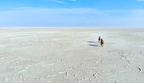
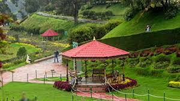

The Thar Desert is one of the world’s largest deserts, stretching across Rajasthan and parts of Gujarat, Haryana, and Punjab. Known for its vast sand dunes, arid plains, and rocky terrain, it is home to unique wildlife and vibrant Rajasthani culture. Cities like Jaisalmer and Jodhpur showcase beautiful forts, palaces, and temples.
The Rann of Kutch, located in Gujarat, is a vast salt marsh famous for its striking landscapes and the Rann Utsav festival. Divided into the Great and Little Rann, it is a haven for wildlife, including the wild ass and migratory birds. Both regions are known for their natural beauty and cultural significance.
Nainital, located in Uttarakhand, is known for its serene lakes, including the famous Naini Lake, and its picturesque setting in the Kumaon Hills. Surrounded by dense forests, the town offers opportunities for boating, trekking, and visiting historic temples. Its cool weather and breathtaking views make it a favorite summer retreat.
Ooty, often referred to as the "Queen of Hill Stations," is located in the Nilgiri Hills of Tamil Nadu. Famous for its lush tea plantations, Ooty is a peaceful haven with attractions like Ooty Lake, the Botanical Gardens, and the Nilgiri Mountain Railway. The region’s cool climate and colonial-era charm make it a popular getaway for nature lovers and honeymooners.
Darjeeling, perched in the eastern Himalayas of West Bengal, is known for its stunning views of the Kangchenjunga range. Famous for its Darjeeling tea and the Toy Train, it offers a mix of natural beauty, colonial architecture, and vibrant Tibetan culture. Visitors can enjoy trekking, visit the Batasia Loop, and experience the unique blend of traditions in this charming hill town.